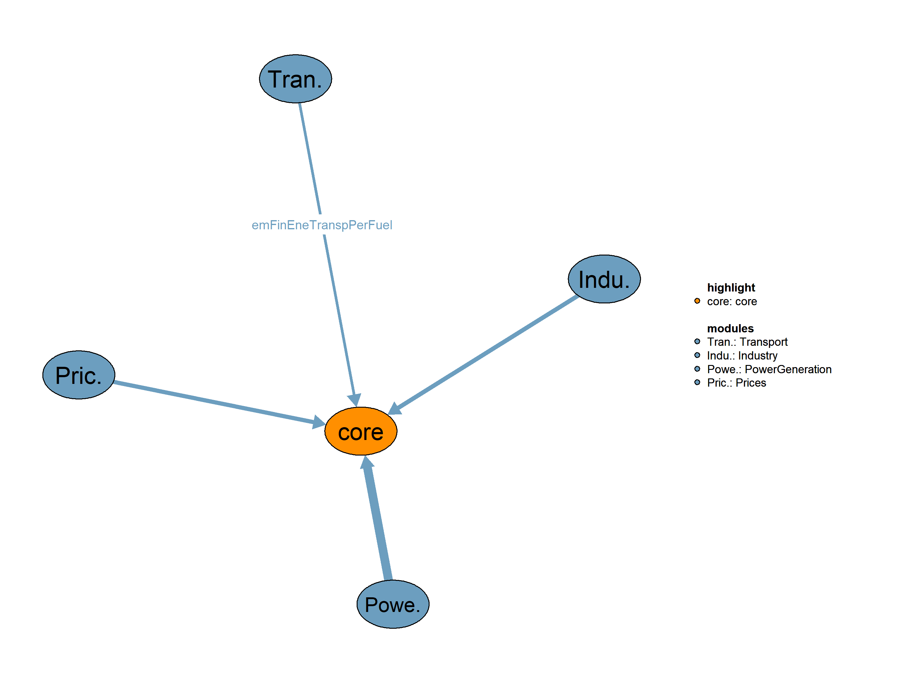

| Description | Unit | |
|---|---|---|
| VMVBaseLoad (allCy, YTIME) |
Corrected base load | \(GW\) |
| VMVCapElec (allCy, PGALL, YTIME) |
Electricity generation plants capacity | \(GW\) |
| VMVCapElecTotEst (allCy, YTIME) |
Estimated Total electricity generation capacity | \(GW\) |
| VMVConsFuel (allCy, DSBS, EF, YTIME) |
Consumption of fuels in each demand subsector, excluding heat from heatpumps | \(Mtoe\) |
| VMVConsFuelInclHP (allCy, DSBS, EF, YTIME) |
Consumption of fuels in each demand subsector including heat from heatpumps | \(Mtoe\) |
| VMVDemFinEneTranspPerFuel (allCy, TRANSE, EF, YTIME) |
Final energy demand in transport subsectors per fuel | \(Mtoe\) |
| VMVPeakLoad (allCy, YTIME) |
Electricity peak load | \(GW\) |
| VMVPriceElecIndResConsu (allCy, ESET, YTIME) |
Electricity price to Industrial and Residential Consumers | \(US\$2015/KWh\) |
| VMVPriceFuelSubsecCarVal (allCy, SBS, EF, YTIME) |
Fuel prices per subsector and fuel | \(k\$2015/toe\) |
| VMVProdElec (allCy, PGALL, YTIME) |
Electricity production | \(TWh\) |
Parameters
iCGI(allCy,YTIME) "Capital Goods Index (defined as CGI(Scenario)/CGI(Baseline)) (1)"
iNPDL(SBS) "Number of Polynomial Distribution Lags (PDL) (1)"
iFPDL(SBS,KPDL) "Polynomial Distribution Lags (PDL) Coefficients per subsector (1)"
iPlantEffByType(allCy,PGALL,YTIME) "Plant efficiency per plant type (1)"
iCo2EmiFac(allCy,SBS,EF,YTIME) "CO2 emission factors per subsector (kgCO2/kgoe fuel burned)"
iNcon(SBS) "Number of consumers (1)"
iDisFunConSize(allCy,DSBS,rCon) "Distribution function of consumer size groups (1)"
iAnnCons(allCy,DSBS,conSet) "Annual consumption of the smallest,modal,largest consumer, average for all countries (various)"
!! For passenger cars (Million km/vehicle)
!! For other passenger tranportation modes (Mpkm/vehicle)
!! For goods transport, (Mtkm/vehicle)
iCumDistrFuncConsSize(allCy,DSBS) "Cummulative distribution function of consumer size groups (1)"
iRateLossesFinCons(allCy,EF,YTIME) "Rate of losses over Available for Final Consumption (1)"
iTransfInpGasworks(allCy,EF,YTIME) "Transformation Input in Gasworks, Blast Furnances, Briquetting plants (Mtoe)"
iFuelExprts(allCy,EF,YTIME) "Fuel Exports (Mtoe)"
iSuppExports(allCy,EF,YTIME) "Supplementary parameter for exports (Mtoe)"
iResMargTotAvailCap(allCy,PGRES,YTIME) "Reserve margins on total available capacity and peak load (1)"
iPlantAvailRate(allCy,PGALL,YTIME) "Plant availability rate (1)"
iCO2CaptRate(allCy,PGALL,YTIME) "Plant CO2 capture rate (1)"
iEffValueInDollars(allCy,SBS,YTIME) "Efficiency value (US$2015/toe)"
iPriceTragets(allCy,SBS,EF,YTIME) "Price Targets (1)"
iPriceReform(allCy,SBS,EF,YTIME) "Price reformation (1)"
iScenarioPri(WEF,NAP,YTIME) "Scenario prices (KUS$2015/toe)"
iResNonSubsElecDem(allCy,SBS,YTIME ) "Residuals in Non Substitutable Electricity Demand (1)"
iResFuelConsPerSubAndFuel(allCy,SBS,EF,YTIME) "Residuals in fuel consumption per subsector and fuel (1)"
iShrNonSubElecInTotElecDem(allCy,SBS) "Share of non substitutable electricity in total electricity demand per subsector (1)"
iFinEneConsPrevYear(allCy,EF,YTIME) "Final energy consumption used for holding previous year results (Mtoe)"
iCarbValYrExog(allCy,ytime) "Carbon value for each year when it is exogenous (US$2015/tn CO2)"
iShrHeatPumpElecCons(allCy,SBS) "Share of heat pump electricity consumption in total substitutable electricity (1)"
iTranfOutGasworks(allCy,EF,YTIME) "Transformation Output from Gasworks, Blast Furnances and Briquetting plants (Mtoe)"
iDistrLosses(allCy,EF,YTIME) "Distribution Losses (Mtoe)"
iFinEneCons(allCy,EF,YTIME) "Final energy consumption (Mtoe)"
iFuelImports(allCy,EF,YTIME) "Fuel Imports (Mtoe)"
iVarCostTech(allCy,SBS,EF,YTIME) "Variable Cost of technology ()"
!! For transport (kUS$2015/vehicle)
!! For Industrial sectors, except Iron and Steel (US$2015/toe-year)
!! For Iron and Steel (US$2015/tn-of-steel)
!! For Domestic sectors (US$2015/toe-year)
iFixOMCostTech(allCy,SBS,EF,YTIME) "Fixed O&M cost of technology (US$2015/toe-year)"
!! Fixed O&M cost of technology for Transport (kUS$2015/vehicle)
!! Fixed O&M cost of technology for Industrial sectors-except Iron and Steel (US$2015/toe-year)"
!! Fixed O&M cost of technology for Iron and Steel (US$2015/tn-of-steel)"
!! Fixed O&M cost of technology for Domestic sectors (US$2015/toe-year)"
iUsfEneConvSubTech(allCy,SBS,EF,YTIME) "Useful Energy Conversion Factor per subsector and technology (1)"
iCapCostTech(allCy,SBS,EF,YTIME) "Capital Cost of technology (various)"
!! - For transport is expressed in kUS$2015 per vehicle
!! - For Industrial sectors (except Iron and Steel) is expressed in kUS$2015/toe-year
!! - For Iron and Steel is expressed in kUS$2015/tn-of-steel
!! - For Domestic Sectors is expressed in kUS$2015/toe-year
iResElecIndex(allCy,YTIME) "Residual for electricity Index (1)"
iIndChar(allCy,INDSE,Indu_Scon_Set) "Industry sector charactetistics (various)"
iNetImp(allCy,EFS,YTIME) "Net imports (Mtoe)"
iFuelConsPerFueSub(allCy,SBS,EF,YTIME) "Fuel consumption per fuel and subsector (Mtoe)"
ODummyObj "Parameter saving objective function"
;
Equations*** Miscellaneous’
qDummyObj "Define dummy objective function"
;
VariablesInterdependent Variables *** Miscellaneous
vDummyObj "Dummy maximisation variable (1)"
VElecConsHeatPla(allCy,DSBS,YTIME) "Electricity consumed in heatpump plants (Mtoe)"
;
Positive Variables
VCarVal(allCy,NAP,YTIME) "Carbon prices for all countries (US$2015/tn CO2)"
VRenValue(YTIME) "Renewable value (US$2015/KWh)"
;
Scalars
sTWhToMtoe "TWh to Mtoe conversion factor" /0.086/
sElecToSteRatioChp "Technical maximum of electricity to steam ratio in CHP plants" /1.15/
sGwToTwhPerYear "convert GW mean power into TWh/y" /8.76/
s "time step iterator" /0/
sSolverTryMax "maximum attempts to solve each time step" /%SolverTryMax%/
sModelStat "helper parameter for solver status"
sFracElecPriChp "Fraction of Electricity Price at which a CHP sells electricity to network" /0.3/
cy "country iterator" /0/
;GENERAL INFORMATION Equation format: “typical useful energy demand equation” The main explanatory variables (drivers) are activity indicators (economic activity) and corresponding energy costs. The type of “demand” is computed based on its past value, the ratio of the current and past activity indicators (with the corresponding elasticity), and the ratio of lagged energy costs (with the corresponding elasticities). This type of equation captures both short term and long term reactions to energy costs. * Define dummy objective function
$IFTHEN.calib %Calibration% == on
qDummyObj(allCy,YTIME)$(TIME(YTIME)$(runCy(allCy))).. vDummyObj =e=
SQRT(SUM(SECTTECH(DSBS,EF)$(INDDOM(DSBS)), SQR(iFuelConsPerFueSub(allCy,DSBS,EF,YTIME)-VMVConsFuelInclHP(allCy,DSBS,EF,YTIME))) ) +
SQRT(SUM(SECTTECH(TRANSE,EF), SQR(VMVDemFinEneTranspPerFuel(allCy,TRANSE,EF,YTIME)-iFuelConsPerFueSub(allCy,TRANSE,EF,YTIME)))) +
0;
$ELSE.calib qDummyObj.. vDummyObj =e= 1;
$ENDIF.calibtable iActv(YTIME,allCy,SBS) "Sector activity (various)"
!! main sectors (Billion US$2015)
!! bunkers and households (1)
!! transport (Gpkm, or Gvehkm or Gtkm)
$ondelim
$include "./iActv.csvr"
$offdelim
;
table iTransChar(allCy,TRANSPCHAR,YTIME) "km per car, passengers per car and residuals for passenger cars market extension ()"
$ondelim
$include "./iTransChar.csv"
$offdelim
;
$IFTHEN.calib %Calibration% == off
table iElastA(allCy,SBS,ETYPES,YTIME) "Activity Elasticities per subsector (1)"
$ondelim
$include "./iElastA.csv"
$offdelim
;
iElastA(runCy,SBS,ETYPES,YTIME) = iElastA("ELL",SBS,ETYPES,YTIME);
$ELSE.calib
variable iElastA(allCy,SBS,ETYPES,YTIME) "Activity Elasticities per subsector (1)";
table iElastAL(allCy,SBS,ETYPES,YTIME) "Activity Elasticities per subsector (1)"
$ondelim
$include "./iElastA.csv"
$offdelim
;
iElastA.L(runCy,SBS,ETYPES,YTIME) = iElastAL("ELL",SBS,ETYPES,YTIME);
iElastA.LO(runCy,SBS,"a",YTIME) = 0.001;
iElastA.UP(runCy,SBS,"a",YTIME) = 5*iElastAL("ELL",SBS,"a",YTIME);
iElastA.LO(runCy,SBS,"b1",YTIME) = -10;
iElastA.UP(runCy,SBS,"b1",YTIME) = -0.001;
iElastA.LO(runCy,SBS,"b2",YTIME) = -10;
iElastA.UP(runCy,SBS,"b2",YTIME) = -0.001;
iElastA.LO(runCy,SBS,"c",YTIME) = -10;
iElastA.UP(runCy,SBS,"c",YTIME) = -0.001;
iElastA.LO(runCy,SBS,"b3",YTIME) = -10;
iElastA.UP(runCy,SBS,"b3",YTIME) = -0.001;
iElastA.LO(runCy,SBS,"b4",YTIME) = 0.001;
iElastA.UP(runCy,SBS,"b4",YTIME) = 10;
iElastA.LO(runCy,SBS,"c1",YTIME) = -10;
iElastA.UP(runCy,SBS,"c1",YTIME) = -0.001;
iElastA.LO(runCy,SBS,"c2",YTIME) = -10;
iElastA.UP(runCy,SBS,"c2",YTIME) = -0.001;
iElastA.LO(runCy,SBS,"c3",YTIME) = -10;
iElastA.UP(runCy,SBS,"c3",YTIME) = -0.001;
iElastA.LO(runCy,SBS,"c4",YTIME) = -10;
iElastA.UP(runCy,SBS,"c4",YTIME) = -0.001;
iElastA.LO(runCy,SBS,"c4",YTIME) = -10;
iElastA.UP(runCy,SBS,"c4",YTIME) = -0.001;
iElastA.LO(runCy,SBS,"c5",YTIME) = -10;
iElastA.UP(runCy,SBS,"c5",YTIME) = -0.001;
$ENDIF.calib
parameter iDiscData(SBS) "Discount rates per subsector ()" /
PCH 0.12
IS 0.12
NF 0.12
CH 0.12
BM 0.12
PP 0.12
FD 0.12
EN 0.12
TX 0.12
OE 0.12
OI 0.12
SE 0.12
AG 0.12
HOU 0.175
PC 0.175
PB 0.12
PT 0.08
PA 0.12
PN 0.12
GU 0.12
GT 0.08
GN 0.12
BU 0.12
NEN 0.08
PG 0.1
H2P 0.08
H2INFR 0.08
/;
parameter iDisc(allCy,SBS,YTIME) "Discount rates per subsector for all countries ()" ;
iDisc(runCy,SBS,YTIME) = iDiscData(SBS);
parameter iCo2EmiFacAllSbs(EF) "CO2 emission factors (kgCO2/kgoe fuel burned)" /
LGN 4.15330622,
HCL 3.941453651,
SLD 4.438008647,
GSL 2.872144882,
GDO 3.068924588,
LPG 2.612562612,
KRS 2.964253636,
RFO 3.207089028,
OLQ 3.207089028,
NGS 2.336234395,
OGS 3.207089028,
BMSWAS 0/;
iCo2EmiFac(runCy,SBS,EF,YTIME) = iCo2EmiFacAllSbs(EF);
iCo2EmiFac(runCy,"IS","HCL",YTIME) = iCo2EmiFacAllSbs("SLD"); !! This is the assignment for coke
iCo2EmiFac(runCy,"H2P","NGS",YTIME) = 3.107;
iCo2EmiFac(runCy,"H2P","BMSWAS",YTIME) = 0.497;
parameter iElaSubData(DSBS) "Elasticities by subsector (1)" /
PCH 2
IS 2.57
NF 1.99
CH 2.23
BM 3.43
PP 2.27
FD 2.54
EN 2.61
TX 3.02
OE 1.49
OI 1.61
SE 1.47
AG 1.82
HOU 2.41
BU 2
NEN 2
/;
parameter iConsSizeDistHeat(conSet) "Consumer sizes for district heating (1)" /smallest 0.425506805,
modal 0.595709528,
largest 0.833993339/;
table iRateLossesFinCons(allCy,EF,YTIME) "Rate of losses over Available for Final Consumption (1)"
$ondelim
$include "./iRateLossesFinCons.csv"
$offdelim
;
parameter iParDHEffData(PGEFS) "Parameter of district heating Efficiency (1)" /
HCL 0.76,
LGN 0.75,
GDO 0.78,
RFO 0.78,
OLQ 0.78,
NGS 0.8,
OGS 0.78,
BMSWAS 0.76
/;
$ontext
table iSuppTransfInputPatFuel(EF,YTIME) "Supplementary Parameter for the transformation input to patent fuel and briquetting plants,coke-oven plants,blast furnace plants and gas works (1)"
$ondelim
$include "./iSuppTransfInputPatFuel.csv"
$offdelim
;
$offtext
table iPriceFuelsIntBase(WEF,YTIME) "International Fuel Prices USED IN BASELINE SCENARIO ($2015/toe)"
$ondelim
$include"./iPriceFuelsIntBase.csv"
$offdelim
;
table iSuppExports(allCy,EF,YTIME) "Supplementary parameter for exports (Mtoe)"
$ondelim
$include"./iSuppExports.csv"
$offdelim
;
parameter iImpExp(allCy,EFS,YTIME) "Imports of exporting countries usually zero (1)" ;
iImpExp(runCy,EFS,YTIME) = 0;
table iDataTransTech (TRANSE, EF, ECONCHAR, YTIME) "Technoeconomic characteristics of transport (various)"
$ondelim
$include"./iDataTransTech.csv"
$offdelim
;
table iDataIndTechnology(INDSE,EF,ECONCHAR) "Technoeconomic characteristics of industry (various)"
IC FC VC LFT USC
IS.HCL 0.32196 6.8 1.36 25 2.3255
IS.LGN 0.48295 10.2 2.04 25 0.5
IS.LPG 0.48295 10.2 2.04 25 0.72
IS.KRS 0.48295 10.2 2.04 25 0.72
IS.GDO 0.48295 10.2 2.04 25 0.72
IS.RFO 0.48295 10.2 2.04 25 0.72
IS.OLQ 0.48295 10.2 2.04 25 0.72
IS.NGS 0.48295 10.2 2.04 25 0.8
IS.OGS 0.48295 10.2 2.04 25 0.8
IS.BMSWAS 0.48295 10.2 2.04 25 0.5
IS.ELC 0.29367 6.8 1.36 25 5.74713
IS.STE1AL 1.04547 17.284 17.68 25 0.35
IS.STE1AH 1.04547 17.284 17.68 25 0.35
IS.STE1AD 0.78340 23.3335 4.896 25 0.34
IS.STE1AR 0.78340 23.3335 4.896 25 0.34
IS.STE1AG 0.50901 12.9631 13.6 20 0.44
IS.STE1AB 1.00334 28.8752 8.16 25 0.37
IS.STE1AH2F 1.34817 40.4451 25 0.5
IS.HEATPUMP 0.92974 19.3882 3.1021 25 1.848
IS.H2F 1.04547 40.4451 17.68 25 5.74713
NF.HCL 3.8528 63.036 30 0.5
NF.LGN 3.8528 63.036 30 0.5
NF.LPG 3.21067 63.036 30 0.72
NF.KRS 3.21067 63.036 30 0.72
NF.GDO 3.21067 63.036 30 0.72
NF.RFO 3.21067 63.036 30 0.72
NF.OLQ 3.21067 63.036 30 0.72
NF.NGS 2.56853 63.036 30 0.8
NF.OGS 2.56853 63.036 30 0.8
NF.BMSWAS 3.8528 63.036 30 0.5
NF.ELC 3.4 63.036 30 0.97
NF.STE1AL 2.43133 40.1956 41.1163 25 0.35
NF.STE1AH 2.43133 40.1956 41.1163 25 0.35
NF.STE1AD 1.82186 54.264 11.386 25 0.34
NF.STE1AR 1.82186 54.264 11.386 25 0.34
NF.STE1AG 1.18376 30.1467 31.6279 20 0.44
NF.STE1AB 2.33335 67.1517 18.9767 25 0.37
NF.STE1AH2F 3.13528 94.0585 30 0.5
NF.HEATPUMP 4.94477 119.819 30 1.848
NF.H2F 4.94477 119.819 41.1163 30 1.848
CH.HCL 0.53294 5.44 25 0.5
CH.LGN 0.53294 5.44 25 0.5
CH.LPG 0.44411 5.44 25 0.72
CH.KRS 0.44411 5.44 25 0.72
CH.GDO 0.44411 5.44 25 0.72
CH.RFO 0.44411 5.44 25 0.72
CH.OLQ 0.44411 5.44 25 0.72
CH.NGS 0.35529 5.44 25 0.8
CH.OGS 0.35529 5.44 25 0.8
CH.BMSWAS 0.53294 5.44 25 0.5
CH.ELC 0.476 5.44 25 0.97
CH.STE1AL 2.43133 40.1956 41.1163 25 0.35
CH.STE1AH 2.43133 40.1956 41.1163 25 0.35
CH.STE1AD 1.82186 54.264 11.386 25 0.34
CH.STE1AR 1.82186 54.264 11.386 25 0.34
CH.STE1AG 1.18376 30.1467 31.6279 20 0.44
CH.STE1AB 2.33335 67.1517 18.9767 25 0.37
CH.STE1AH2F 3.13528 94.0585 25 0.5
CH.HEATPUMP 0.68398 10.3404 25 1.848
CH.H2F 3.13528 94.0585 41.1163 25 1.848
BM.HCL 4.41477 3.2096 30 0.5
BM.LGN 4.41477 3.2096 30 0.5
BM.LPG 3.67898 3.2096 30 0.72
BM.KRS 3.67898 3.2096 30 0.72
BM.GDO 3.67898 3.2096 30 0.72
BM.RFO 3.67898 3.2096 30 0.72
BM.OLQ 3.67898 3.2096 30 0.72
BM.NGS 2.94318 3.2096 30 0.8
BM.OGS 2.94318 3.2096 30 0.8
BM.BMSWAS 4.41477 3.2096 30 0.5
BM.ELC 3.808 3.2096 30 0.97
BM.STE1AL 2.43133 40.1956 41.1163 25 0.35
BM.STE1AH 2.43133 40.1956 41.1163 25 0.35
BM.STE1AD 1.82186 54.264 11.386 25 0.34
BM.STE1AR 1.82186 54.264 11.386 25 0.34
BM.STE1AG 1.18376 30.1467 31.6279 20 0.44
BM.STE1AB 2.33335 67.1517 18.9767 25 0.37
BM.STE1AH2F 3.13528 94.0585 30 0.5
BM.HEATPUMP 5.66602 6.10081 30 1.848
BM.H2F 5.66602 94.0585 41.1163 30 1.848
PP.HCL 0.90179 1.632 25 0.5
PP.LGN 0.90179 1.632 25 0.5
PP.LPG 0.75149 1.632 25 0.72
PP.KRS 0.75149 1.632 25 0.72
PP.GDO 0.75149 1.632 25 0.72
PP.RFO 0.75149 1.632 25 0.72
PP.OLQ 0.75149 1.632 25 0.72
PP.NGS 0.60119 1.632 25 0.8
PP.OGS 0.60119 1.632 25 0.8
PP.BMSWAS 0.90179 1.632 25 0.5
PP.ELC 0.884 1.632 25 0.97
PP.STE1AL 2.43133 40.1956 41.1163 25 0.35
PP.STE1AH 2.43133 40.1956 41.1163 25 0.35
PP.STE1AD 1.82186 54.264 11.386 25 0.34
PP.STE1AR 1.82186 54.264 11.386 25 0.34
PP.STE1AG 1.18376 30.1467 31.6279 20 0.44
PP.STE1AB 2.33335 67.1517 18.9767 25 0.37
PP.STE1AH2F 2.27889 68.3668 25 0.5
PP.HEATPUMP 1.15738 3.10211 25 1.68
PP.H2F 2.43133 68.3668 41.1163 25 1.68
FD.HCL 0.63096 0.5372 25 0.5
FD.LGN 0.63096 0.5372 25 0.5
FD.LPG 0.42064 0.5372 25 0.72
FD.KRS 0.42064 0.5372 25 0.72
FD.GDO 0.42064 0.5372 25 0.72
FD.RFO 0.42064 0.5372 25 0.72
FD.OLQ 0.42064 0.5372 25 0.72
FD.NGS 0.33651 0.5372 25 0.8
FD.OGS 0.33651 0.5372 25 0.8
FD.BMSWAS 0.63096 0.5372 25 0.5
FD.ELC 0.476 0.5372 25 0.97
FD.STE1AL 2.43133 40.1956 41.1163 25 0.35
FD.STE1AH 2.43133 40.1956 41.1163 25 0.35
FD.STE1AD 1.82186 54.264 11.386 25 0.34
FD.STE1AR 1.82186 54.264 11.386 25 0.34
FD.STE1AG 1.18376 30.1467 31.6279 20 0.44
FD.STE1AB 2.33335 67.1517 18.9767 25 0.37
FD.STE1AH2F 2.27889 68.3668 25 0.5
FD.HEATPUMP 0.64783 1.02111 25 1.68
FD.H2F 2.43133 68.3668 41.1163 25 1.68
EN.HCL 1.00937 0.31769 25 0.5
EN.LGN 1.00937 0.31769 25 0.5
EN.LPG 0.84114 0.31769 25 0.72
EN.KRS 0.84114 0.31769 25 0.72
EN.GDO 0.84114 0.31769 25 0.72
EN.RFO 0.84114 0.31769 25 0.72
EN.OLQ 0.84114 0.31769 25 0.72
EN.NGS 0.67291 0.31769 25 0.8
EN.OGS 0.67291 0.31769 25 0.8
EN.BMSWAS 1.00937 0.31769 25 0.5
EN.ELC 0.748 0.31769 20 0.97
EN.STE1AL 2.43133 40.1956 41.1163 25 0.35
EN.STE1AH 2.43133 40.1956 41.1163 25 0.35
EN.STE1AD 1.82186 54.264 11.386 25 0.34
EN.STE1AR 1.82186 54.264 11.386 25 0.34
EN.STE1AG 1.18376 30.1467 31.6279 20 0.44
EN.STE1AB 2.33335 67.1517 18.9767 25 0.37
EN.STE1AH2F 2.27889 68.3668 25 0.5
EN.HEATPUMP 1.29545 0.60387 25 1.68
EN.H2F 2.43133 68.3668 41.1163 25 1.68
TX.HCL 0.67371 0.16959 20 0.5
TX.LGN 0.67371 0.16959 20 0.5
TX.LPG 0.44914 0.16959 20 0.72
TX.KRS 0.44914 0.16959 20 0.72
TX.GDO 0.44914 0.16959 20 0.72
TX.RFO 0.44914 0.16959 20 0.72
TX.OLQ 0.44914 0.16959 20 0.72
TX.NGS 0.35931 0.16959 20 0.8
TX.OGS 0.35931 0.16959 20 0.8
TX.BMSWAS 0.476 0.16959 20 0.5
TX.ELC 0.476 0.16959 20 0.97
TX.STE1AL 2.43133 40.1956 41.1163 25 0.35
TX.STE1AH 2.43133 40.1956 41.1163 25 0.35
TX.STE1AD 1.82186 54.264 11.386 25 0.34
TX.STE1AR 1.82186 54.264 11.386 25 0.34
TX.STE1AG 1.18376 30.1467 31.6279 20 0.44
TX.STE1AB 2.33335 67.1517 18.9767 25 0.37
TX.STE1AH2F 2.27889 68.3668 20 0.5
TX.HEATPUMP 0.69173 0.32236 20 1.68
TX.H2F 2.43133 68.3668 41.1163 25 1.68
OE.HCL 1.00937 0.31769 25 0.5
OE.LGN 1.00937 0.31769 25 0.5
OE.LPG 0.84114 0.31769 25 0.72
OE.KRS 0.84114 0.31769 25 0.72
OE.GDO 0.84114 0.31769 25 0.72
OE.RFO 0.84114 0.31769 25 0.72
OE.OLQ 0.84114 0.31769 25 0.72
OE.NGS 0.67291 0.31769 25 0.8
OE.OGS 0.67291 0.31769 25 0.8
OE.BMSWAS 1.00937 0.31769 25 0.5
OE.ELC 0.84114 0.31769 25 0.97
OE.STE1AL 2.43133 40.1956 41.1163 25 0.35
OE.STE1AH 2.43133 40.1956 41.1163 25 0.35
OE.STE1AD 1.82186 54.264 11.386 25 0.34
OE.STE1AR 1.82186 54.264 11.386 25 0.34
OE.STE1AG 1.18376 30.1467 31.6279 20 0.44
OE.STE1AB 2.33335 67.1517 18.9767 25 0.37
OE.STE1AH2F 2.27889 68.3668 25 0.5
OE.HEATPUMP 1.29545 0.60387 25 1.68
OE.H2F 2.43133 68.3668 41.1163 25 1.68
OI.HCL 0.94967 1.40352 20 0.5
OI.LGN 0.94967 1.40352 20 0.5
OI.LPG 0.79139 1.40352 20 0.72
OI.KRS 0.79139 1.40352 20 0.72
OI.GDO 0.79139 1.40352 20 0.72
OI.RFO 0.79139 1.40352 20 0.72
OI.OLQ 0.79139 1.40352 20 0.72
OI.NGS 0.63311 1.40352 20 0.8
OI.OGS 0.63311 1.40352 20 0.8
OI.BMSWAS 0.94967 1.40352 20 0.5
OI.ELC 0.68 1.40352 20 0.97
OI.STE1AL 2.43133 40.1956 41.1163 25 0.35
OI.STE1AH 2.43133 40.1956 41.1163 25 0.35
OI.STE1AD 1.82186 54.264 11.386 25 0.34
OI.STE1AR 1.82186 54.264 11.386 25 0.34
OI.STE1AG 1.18376 30.1467 31.6279 20 0.44
OI.STE1AB 2.33335 67.1517 18.9767 25 0.37
OI.STE1AH2F 2.27889 68.3668 20 0.5
OI.HEATPUMP 1.21884 2.66781 20 1.68
OI.H2F 2.43133 68.3668 41.1163 25 1.68
;
iDataIndTechnology(INDSE,EF,"IC") = iDataIndTechnology(INDSE,EF,"IC") * 1.3;
iDataIndTechnology(INDSE,EF,"FC") = iDataIndTechnology(INDSE,EF,"FC") * 1.3;
iDataIndTechnology(INDSE,EF,"VC") = iDataIndTechnology(INDSE,EF,"VC") * 1.3;
table iDataDomTech(DOMSE,EF,ECONCHAR) "Technical lifetime of Industry (years)"
IC FC VC LFT USC
SE.HCL 0.323544 10.88 20 0.7
SE.LGN 0.323544 10.88 20 0.5
SE.LPG 0.24888 10.88 20 0.8
SE.GSL 0.323544 10.88 20 0.7
SE.KRS 0.24888 10.88 20 0.8
SE.GDO 0.24888 6.8 20 0.85
SE.RFO 0.24888 10.88 20 0.8
SE.OLQ 0.24888 10.88 20 0.8
SE.NGS 0.2244 6.8 20 0.88
SE.OGS 0.2244 10.88 20 0.8
SE.SOL 0.86224 1.36 20 0.97
SE.BMSWAS 0.323544 10.88 20 0.5
SE.ELC 0.3 8.976 12 0.97
SE.STE1AL 2.43133 40.1956 41.1163 30 0.375
SE.STE1AH 2.43133 40.1956 41.1163 30 0.375
SE.STE1AD 1.82186 54.264 11.386 30 0.3475
SE.STE1AR 1.82186 54.264 11.386 30 0.3475
SE.STE1AG 1.18376 30.1467 31.6279 25 0.485
SE.STE1AB 2.33335 67.1517 18.9767 30 0.3975
SE.STE1AH2F 2.68089 80.4266 20 0.465
SE.STE2LGN 0.296442 1.00489 2.37209 20 0.816667
SE.STE2OSL 0.296442 1.00489 2.37209 20 0.816667
SE.STE2GDO 0.296442 1.00489 2.37209 20 0.856667
SE.STE2RFO 0.296442 1.00489 2.37209 20 0.856667
SE.STE2OLQ 0.296442 1.00489 2.37209 20 0.856667
SE.STE2NGS 0.296442 1.00489 2.37209 20 0.896667
SE.STE2OGS 0.296442 1.00489 2.37209 20 0.896667
SE.STE2BMS 0.296442 1.00489 2.37209 20 0.816667
SE.HEATPUMP 0.432 12.9254 20 1.848
AG.HCL 0.323544 10.88 20 0.7
AG.LGN 0.323544 10.88 20 0.5
AG.LPG 0.24888 10.88 20 0.8
AG.GSL 0.323544 10.88 20 0.7
AG.KRS 0.24888 10.88 20 0.8
AG.GDO 0.24888 6.8 20 0.85
AG.RFO 0.24888 10.88 20 0.8
AG.OLQ 0.24888 10.88 20 0.8
AG.NGS 0.2244 6.8 20 0.88
AG.OGS 0.2244 10.88 20 0.8
AG.SOL 0.86224 1.36 20 0.97
AG.BMSWAS 0.323544 10.88 20 0.5
AG.ELC 0.3 8.976 12 0.97
AG.STE1AL 2.43133 40.1956 41.1163 30 0.375
AG.STE1AH 2.43133 40.1956 41.1163 30 0.375
AG.STE1AD 1.82186 54.264 11.386 30 0.3475
AG.STE1AR 1.82186 54.264 11.386 30 0.3475
AG.STE1AG 1.18376 30.1467 31.6279 25 0.485
AG.STE1AB 2.33335 67.1517 18.9767 30 0.3975
AG.STE1AH2F 2.68089 80.4266 20 0.465
AG.STE2LGN 0.296442 1.00489 2.37209 20 0.816667
AG.STE2OSL 0.296442 1.00489 2.37209 20 0.816667
AG.STE2GDO 0.296442 1.00489 2.37209 20 0.856667
AG.STE2RFO 0.296442 1.00489 2.37209 20 0.856667
AG.STE2OLQ 0.296442 1.00489 2.37209 20 0.856667
AG.STE2NGS 0.296442 1.00489 2.37209 20 0.896667
AG.STE2OGS 0.296442 1.00489 2.37209 20 0.896667
AG.STE2BMS 0.296442 1.00489 2.37209 20 0.816667
AG.HEATPUMP 0.432 12.9254 20 1.848
HOU.HCL 0.323544 10.88 20 0.7
HOU.LGN 0.323544 10.88 20 0.5
HOU.LPG 0.24888 10.88 20 0.8
HOU.GSL 0.323544 10.88 20 0.7
HOU.KRS 0.24888 10.88 20 0.8
HOU.GDO 0.24888 6.8 20 0.85
HOU.RFO 0.24888 10.88 20 0.8
HOU.OLQ 0.24888 10.88 20 0.8
HOU.NGS 0.2244 6.8 20 0.88
HOU.OGS 0.2244 10.88 20 0.8
HOU.SOL 0.86224 1.36 20 0.97
HOU.BMSWAS 0.323544 10.88 20 0.5
HOU.ELC 0.3 8.976 12 0.97
HOU.STE1AL 2.43133 40.1956 41.1163 30 0.375
HOU.STE1AH 2.43133 40.1956 41.1163 30 0.375
HOU.STE1AD 1.82186 54.264 11.386 30 0.3475
HOU.STE1AR 1.82186 54.264 11.386 30 0.3475
HOU.STE1AG 1.18376 30.1467 31.6279 25 0.485
HOU.STE1AB 2.33335 67.1517 18.9767 30 0.3975
HOU.STE1AH2F 2.68089 80.4266 20 0.465
HOU.STE2LGN 0.296442 1.00489 2.37209 20 0.816667
HOU.STE2OSL 0.296442 1.00489 2.37209 20 0.816667
HOU.STE2GDO 0.296442 1.00489 2.37209 20 0.856667
HOU.STE2RFO 0.296442 1.00489 2.37209 20 0.856667
HOU.STE2OLQ 0.296442 1.00489 2.37209 20 0.856667
HOU.STE2NGS 0.296442 1.00489 2.37209 20 0.896667
HOU.STE2OGS 0.296442 1.00489 2.37209 20 0.896667
HOU.STE2BMS 0.296442 1.00489 2.37209 20 0.816667
HOU.HEATPUMP 0.432 12.9254 20 1.848
;
iDataDomTech(DOMSE,EF,"IC") = iDataDomTech(DOMSE,EF,"IC") * 1.3;
iDataDomTech(DOMSE,EF,"FC") = iDataDomTech(DOMSE,EF,"FC") * 1.3;
iDataDomTech(DOMSE,EF,"VC") = iDataDomTech(DOMSE,EF,"VC") * 1.3;
table iDataNonEneSec(NENSE,EF,ECONCHAR) "Technical data of non energy uses and bunkers (various)"
IC FC VC LFT USC
PCH.HCL 0.26227 45.22 2.37209 20 0.65
PCH.LGN 0.26227 47.6 2.37209 20 0.5
PCH.LPG 0.18088 20.4 2.37209 20 0.72
PCH.GDO 0.18088 9.044 2.37209 20 0.72
PCH.RFO 0.18088 18.088 2.37209 20 0.72
PCH.OLQ 0.18088 20.4 2.37209 20 0.72
PCH.NGS 0.18088 0.9044 2.37209 20 0.8
PCH.OGS 0.18088 1.36 2.37209 20 0.8
BU.GDO 0.204 0.136 25 0.72
BU.RFO 0.204 0.136 25 0.72
BU.OLQ 0.136 6.8 25 0.72
NEN.HCL 0.26227 45.22 2.37209 20 0.65
NEN.LGN 0.26227 47.6 2.37209 20 0.5
NEN.LPG 0.612 20.4 2.37209 20 0.72
NEN.GDO 0.18088 9.044 2.37209 20 0.72
NEN.RFO 0.18088 18.088 2.37209 20 0.72
NEN.OLQ 0.612 20.4 2.37209 20 0.72
NEN.NGS 0.18088 0.9044 2.37209 20 0.8
NEN.OGS 0.18088 1.36 2.37209 20 0.8
;
iDataNonEneSec(NENSE,EF,"IC") = iDataNonEneSec(NENSE,EF,"IC") * 1.3;
iDataNonEneSec(NENSE,EF,"FC") = iDataNonEneSec(NENSE,EF,"FC") * 1.3;
iDataNonEneSec(NENSE,EF,"VC") = iDataNonEneSec(NENSE,EF,"VC") * 1.3;
table iIndCharData(allCy,INDSE,Indu_Scon_Set) "Industry sector charactetistics (various)"
BASE SHR_NSE SH_HPELC
ELL.IS 0.4397 0.7 0.00001
ELL.NF 0 0.95 0.00001
ELL.CH 0.1422 0.95 0.00001
ELL.BM 2.1062 0.95 0.00001
ELL.PP 0 0.95 0.00001
ELL.FD 0.6641 0.95 0.00001
ELL.TX 0.0638 0.95 0.00001
ELL.EN 1.6664 0.95 0.00001
ELL.OE 0.00000001 0.95 0.00001
ELL.OI 1.5161 0.95 0.00001
;
iIndChar(runCy,INDSE,Indu_Scon_Set) = iIndCharData("ELL",INDSE,Indu_Scon_Set);
table iInitConsSubAndInitShaNonSubElec(DOMSE,Indu_Scon_Set) "Initial Consumption per Subsector and Initial Shares of Non Substitutable Electricity in Total Electricity Demand (Mtoe)"
BASE SHR_NSE SH_HPELC
SE 1.8266 0.9 0.00001
HOU 11.511 0.9 0.00001
AG 0.2078 0.9 0.00001
;
iShrHeatPumpElecCons(runCy,INDSE) = iIndChar(runCy,INDSE,"SH_HPELC");
iShrHeatPumpElecCons(runCy,DOMSE) = iInitConsSubAndInitShaNonSubElec(DOMSE,"SH_HPELC");
iFuelExprts(runCy,EFS,YTIME) = iSuppExports(runCy,EFS,YTIME);
iNcon(TRANSE)$(sameas(TRANSE,"PC") or sameas(TRANSE,"GU")) = 10; !! 11 different consumer size groups for cars and trucks
iNcon(TRANSE)$(not (sameas(TRANSE,"PC") or sameas(TRANSE,"GU"))) = 1; !! 2 different consumer size groups for inland navigation, trains, busses and aviation
iNcon(INDSE) = 10; !! 11 different consumer size groups for industrial sectors
iNcon(DOMSE) = 10; !! 11 different consumer size groups for domestic and tertiary sectors
iNcon(NENSE) = 10; !! 11 different consumer size groups for non energy uses
iNcon("BU") = 2; !! ... except bunkers .
iAnnCons(runCy,'PC','smallest')= 0.5 * 0.952 * iTransChar(runCy,"KM_VEH","%fBaseY%") * 1000 * 1E-6;
iAnnCons(runCy,'PC' ,'modal')=0.952 * iTransChar(runCy,"KM_VEH","%fBaseY%") * 1000 * 1E-6;
iAnnCons(runCy,'PC' ,'largest')= 4 * 0.952 * iTransChar(runCy,"KM_VEH","%fBaseY%") * 1000 * 1E-6;
iAnnCons(runCy,'GU','smallest')=0.5 * 0.706 * iTransChar(runCy,"KM_VEH_TRUCK","%fBaseY%")* 1000 * 2 / 3 * 1E-6;
iAnnCons(runCy,'GU','modal')=0.706 * iTransChar(runCy,"KM_VEH_TRUCK","%fBaseY%") * 1000 * 2 * 1E-6;
iAnnCons(runCy,'GU','largest')=4 * 0.706 * iTransChar(runCy,"KM_VEH_TRUCK","%fBaseY%") * 1000 * 2 * 10 * 1E-6;
iAnnCons(runCy,'PA','smallest')=40000 * 50 * 1E-6;
iAnnCons(runCy,'PA','modal')=400000 * 100 * 1E-6;
iAnnCons(runCy,'PA','largest')=800000 * 300 * 1E-6;
iAnnCons(runCy,'PB',"smallest") = 20000 * 5 * 1E-6;
iAnnCons(runCy,'PB',"modal") = 50000 * 15 * 1E-6;
iAnnCons(runCy,'PB',"largest") = 200000 * 50 * 1E-6;
iAnnCons(runCy,'PT',"smallest") = 50000 * 50 * 1E-6;
iAnnCons(runCy,'PT',"modal") = 200000 * 150 * 1e-6;
iAnnCons(runCy,'PT',"largest") = 400000 * 500 * 1E-6;
iAnnCons(runCy,'GT',"smallest") = 50000 * 20 * 1E-6;
iAnnCons(runCy,'GT',"modal") = 200000 * 200 * 1e-6;
iAnnCons(runCy,'GT',"largest") = 400000 * 500 * 1E-6;
iAnnCons(runCy,'PN',"smallest") = 10000 * 50 * 1E-6;
iAnnCons(runCy,'PN',"modal") = 50000 * 100 * 1e-6;
iAnnCons(runCy,'PN',"largest") = 100000 * 500 * 1E-6;
iAnnCons(runCy,'GN',"smallest") = 10000 * 20 * 1E-6;
iAnnCons(runCy,'GN',"modal") = 50000 * 300 * 1e-6;
iAnnCons(runCy,'GN',"largest") = 100000 * 1000 * 1E-6;
iAnnCons(runCy,INDSE,"smallest") = 0.2 ;
iAnnCons(runCy,INDSE,"largest") = 0.9 ;
iAnnCons(runCy,"IS","modal") = 0.587;
iAnnCons(runCy,INDSE,"modal")$(not sameas(INDSE,"IS")) = 0.487;
iAnnCons(runCy,DOMSE,"smallest") = iConsSizeDistHeat("smallest") ;
iAnnCons(runCy,DOMSE,"largest") = iConsSizeDistHeat("largest") ;
iAnnCons(runCy,DOMSE,"modal") = iConsSizeDistHeat("modal");
iAnnCons(runCy,NENSE,"smallest") = 0.2 ;
iAnnCons(runCy,NENSE,"largest") = 0.9 ;
iAnnCons(runCy,NENSE,"modal") = 0.487 ;
iAnnCons(runCy,"BU","smallest") = 0.2 ;
iAnnCons(runCy,"BU","largest") = 1 ;
iAnnCons(runCy,"BU","modal") = 0.5 ;
Loop (runCy,DSBS) DO
Loop rCon$(ord(rCon) le iNcon(DSBS)+1) DO
iDisFunConSize(runCy,DSBS,rCon) =
Prod(nSet$(ord(Nset) le iNcon(DSBS)),ord(nSet))
/
(
(
Prod(nSet$(ord(nSet) le iNcon(DSBS)-(ord(rCon)-1)),ord(nSet))$(ord(rCon) lt iNcon(DSBS)+1)
+1$(ord(rCon) eq iNcon(DSBS)+1)
)
*
(
Prod(nSet$(ord(nSet) le ord(rCon)-1),ord(nSet))$(ord(rCon) ne 1)+1$(ord(rCon) eq 1))
)
*
Power(log(iAnnCons(runCy,DSBS,"modal")/iAnnCons(runCy,DSBS,"smallest")),ord(rCon)-1)
*
Power(log(iAnnCons(runCy,DSBS,"largest")/iAnnCons(runCy,DSBS,"modal")),iNcon(DSBS)-(ord(rCon)-1))
/
(Power(log(iAnnCons(runCy,DSBS,"largest")/iAnnCons(runCy,DSBS,"smallest")),iNcon(DSBS)) )
*
iAnnCons(runCy,DSBS,"smallest")*(iAnnCons(runCy,DSBS,"largest")/iAnnCons(runCy,DSBS,"smallest"))**((ord(rCon)-1)/iNcon(DSBS))
;
ENDLOOP;
ENDLOOP;
iCumDistrFuncConsSize(runCy,DSBS) = sum(rCon, iDisFunConSize(runCy,DSBS,rCon));
iCGI(allCy,YTIME) = 1;
$ontext
table iResTotCapMxmLoad(allCy,PGRES,YTIME) "Residuals for total capacity and maximum load (1)"
$ondelim
$include"./iResTotCapMxmLoad.csv"
$offdelim
;
iResMargTotAvailCap(runCy,PGRES,YTIME)$an(YTIME) = iResTotCapMxmLoad(runCy,PGRES,YTIME);
table iDataOtherTransfOutput(allCy,EF,YTIME) "Data for Other transformation output (Mtoe)"
$ondelim
$include"./iDataOtherTransfOutput.csv"
$offdelim
;
iTranfOutGasworks(runCy,EFS,YTIME)$(not An(YTIME)) = iDataOtherTransfOutput(runCy,EFS,YTIME);
$offtext
table iDataDistrLosses(allCy,EF,YTIME) "Data for Distribution Losses (Mtoe)"
$ondelim
$include"./iDataDistrLosses.csv"
$offdelim
;
iDistrLosses(runCy,EFS,YTIME) = iDataDistrLosses(runCy,EFS,YTIME);
table iFuelConsTRANSE(allCy,TRANSE,EF,YTIME) "Fuel consumption (Mtoe)"
$ondelim
$include"./iFuelConsTRANSE.csv"
$offdelim
;
iFuelConsPerFueSub(runCy,TRANSE,EF,YTIME) = iFuelConsTRANSE(runCy,TRANSE,EF,YTIME);
table iFuelConsINDSE(allCy,INDSE,EF,YTIME) "Fuel consumption of industry subsector (Mtoe)"
$ondelim
$include"./iFuelConsINDSE.csv"
$offdelim
;
iFuelConsINDSE(runCy,INDSE,EF,YTIME)$(SECTTECH(INDSE,EF) $(iFuelConsINDSE(runCy,INDSE,EF,YTIME)<=0)) = 1e-6;
table iFuelConsDOMSE(allCy,DOMSE,EF,YTIME) "Fuel consumption of domestic subsector (Mtoe)"
$ondelim
$include"./iFuelConsDOMSE.csv"
$offdelim
;
iFuelConsDOMSE(runCy,DOMSE,EF,YTIME)$(SECTTECH(DOMSE,EF) $(iFuelConsDOMSE(runCy,DOMSE,EF,YTIME)<=0)) = 1e-6;
table iFuelConsNENSE(allCy,NENSE,EF,YTIME) "Fuel consumption of non energy and bunkers (Mtoe)"
$ondelim
$include"./iFuelConsNENSE.csv"
$offdelim
;
iFuelConsNENSE(runCy,NENSE,EF,YTIME)$(SECTTECH(NENSE,EF) $(iFuelConsNENSE(runCy,NENSE,EF,YTIME)<=0)) = 1e-6;
iFuelConsPerFueSub(runCy,INDSE,EF,YTIME) = iFuelConsINDSE(runCy,INDSE,EF,YTIME);
iFuelConsPerFueSub(runCy,DOMSE,EF,YTIME) = iFuelConsDOMSE(runCy,DOMSE,EF,YTIME);
iFuelConsPerFueSub(runCy,NENSE,EF,YTIME) = iFuelConsNENSE(runCy,NENSE,EF,YTIME);
iFinEneCons(runCy,EFS,YTIME) = sum(INDDOM,
sum(EF$(EFtoEFS(EF,EFS) $SECTTECH(INDDOM,EF)), iFuelConsPerFueSub(runCy,INDDOM,EF,YTIME)))
+
sum(TRANSE,
sum(EF$(EFtoEFS(EF,EFS) $SECTTECH(TRANSE,EF) $(not plugin(EF)) ), iFuelConsPerFueSub(runCy,TRANSE,EF,YTIME)));
iCO2CaptRate(runCy,PGALL,YTIME) = 2;
iEffValueInDollars(runCy,SBS,YTIME)=0;
iScenarioPri(WEF,"NOTRADE",YTIME)=0;
$ontext
VMVCapElecTotEst.FX(runCy,YTIME)$(not An(YTIME)) = iTotAvailCapBsYr(runCy);
VMVCapElecTotEst.L(runCy,TT) = iResMargTotAvailCap(runCy,"TOT_CAP_RES",TT) * VMVCapElecTotEst.L(runCy,TT-1)
* VMVPeakLoad.L(runCy,TT)/VMVPeakLoad.L(runCy,TT-1);
table iDataPriceReform(allCy,AGSECT,EF,YTIME) "Price reform (1)"
$ondelim
$include"./iDataPriceReform.csv"
$offdelim
;
iPriceReform(runCy,INDSE1(SBS),EF,YTIME)=iDataPriceReform(runCy,"INDSE1",EF,YTIME) ;
iPriceReform(runCy,DOMSE1(SBS),EF,YTIME)=iDataPriceReform(runCy,"DOMSE1",EF,YTIME) ;
iPriceReform(runCy,NENSE1(SBS),EF,YTIME)=iDataPriceReform(runCy,"NENSE1",EF,YTIME) ;
iPriceReform(runCy,TRANS1(SBS),EF,YTIME)=iDataPriceReform(runCy,"TRANS1",EF,YTIME) ;
iPriceReform(runCy,"PG",EF,YTIME)=iDataPriceReform(runCy,"INDSE1",EF,YTIME) ;
$offtext
table iDataImports(allCy,EF,YTIME) "Data for imports (Mtoe)"
$ondelim
$include"./iDataImports.csv"
$offdelim
;
iFuelImports(runCy,EFS,YTIME)$(not An(YTIME)) = iDataImports(runCy,EFS,YTIME);
iNetImp(runCy,EFS,YTIME) = iDataImports(runCy,"ELC",YTIME)-iSuppExports(runCy,"ELC",YTIME);
iResElecIndex(runCy,YTIME) = 1;
$ontext
table iResNonSubElec(allCy,INDSE,YTIME) "Residuals for non subsitutable electricity (1)"
$ondelim
$include"./iResNonSubElec.csv"
$offdelim
;
table iResNonSubElecCons(allCy,DOMSE,YTIME) "Residuals in Non Substitutable Electricity Consumption per substector (1)"
$ondelim
$include"./iResNonSubElecCons.csv"
$offdelim
;
iResNonSubsElecDem(runCy,INDSE,YTIME)$an(YTIME) = iResNonSubElec(runCy,INDSE,YTIME);
iResNonSubsElecDem(runCy,DOMSE,YTIME)$an(YTIME) = iResNonSubElecCons(runCy,DOMSE,YTIME);
table iResFuelConsSub(allCy,INDSE,EF,YTIME) "Residuals for fuel consumption per subsector (1)"
$ondelim
$include"./iResFuelConsSub.csv"
$offdelim
;
table iResFuelConsPerFuelAndSub(allCy,DOMSE,EF,YTIME) "Residuals in fuel consumption per fuel and subsector (1)"
$ondelim
$include"./iResFuelConsPerFuelAndSub.csv"
$offdelim
;
table iResInFuelConsPerFuelAndSub(allCy,NENSE,EF,YTIME) "Residuals in fuel consumption per fuel and subsector (1)"
$ondelim
$include"./iResInFuelConsPerFuelAndSub.csv"
$offdelim
;
iResFuelConsPerSubAndFuel(runCy,INDSE,EF,YTIME)$an(YTIME) = iResFuelConsSub(runCy,INDSE,EF,YTIME);
iResFuelConsPerSubAndFuel(runCy,DOMSE,EF,YTIME)$an(YTIME) = iResFuelConsPerFuelAndSub(runCy,DOMSE,EF,YTIME);
iResFuelConsPerSubAndFuel(runCy,NENSE,EF,YTIME)$an(YTIME) = iResInFuelConsPerFuelAndSub(runCy,NENSE,EF,YTIME);
table iResTranspFuelConsSubTech(allCy,TRANSE,EF,YTIME) "Residual Transport on Specific Fuel Consumption per Subsector and Technology (1)"
$ondelim
$include"./iResTranspFuelConsSubTech.csv"
$offdelim
;
$offtext
table iEnvPolicies(allCy,POLICIES_SET,YTIME) "Environmental policies on emissions constraints and subsidy on renewables (Mtn CO2)"
$ondelim
$include"./iEnvPolicies.csv"
$offdelim
;
if %fScenario% eq 0 then
iCarbValYrExog(allCy,YTIME)$an(YTIME) = 0;
elseif %fScenario% eq 1 then
iCarbValYrExog(allCy,YTIME)$an(YTIME) = iEnvPolicies(allCy,"exogCV_NPi",YTIME);
elseif %fScenario% eq 2 then
iCarbValYrExog(allCy,YTIME)$an(YTIME) = iEnvPolicies(allCy,"exogCV_1_5C",YTIME);
elseif %fScenario% eq 3 then
iCarbValYrExog(allCy,YTIME)$an(YTIME) = iEnvPolicies(allCy,"exogCV_2C",YTIME);
endif;
table iMatrFactorData(SBS,EF,YTIME) "Maturity factor per technology and subsector (1)"
$ondelim
$include"./iMatrFactorData.csv"
$offdelim
;
$IFTHEN.calib %MatFacCalibration% == off
parameter iMatrFactor(allCy,SBS,EF,YTIME) "Maturity factor per technology and subsector for all countries (1)";
iMatrFactor(runCy,SBS,EF,YTIME) = iMatrFactorData(SBS,EF,YTIME);
iMatrFactor(runCy,SBS,EF,YTIME)$(iMatrFactor(runCy,SBS,EF,YTIME)=0) = 0.000001;
$ELSE.calib
variable iMatrFactor(allCy,SBS,EF,YTIME) "Maturity factor per technology and subsector for all countries (1)";
iMatrFactor.L(runCy,SBS,EF,YTIME) = iMatrFactorData(SBS,EF,YTIME);
iMatrFactor.L(runCy,SBS,EF,YTIME)$(iMatrFactor.L(runCy,SBS,EF,YTIME)=0) = 0.000001;
iMatrFactor.LO(runCy,SBS,EF,YTIME) = -10;
iMatrFactor.UP(runCy,SBS,EF,YTIME) = 100;
$ENDIF.calib
iShrNonSubElecInTotElecDem(runCy,INDSE) = iIndChar(runCy,INDSE,"SHR_NSE");
iShrNonSubElecInTotElecDem(runCy,INDSE)$(iShrNonSubElecInTotElecDem(runCy,INDSE)>0.98) = 0.98;
iShrNonSubElecInTotElecDem(runCy,DOMSE) = iInitConsSubAndInitShaNonSubElec(DOMSE,"SHR_NSE");
iShrNonSubElecInTotElecDem(runCy,DOMSE)$(iShrNonSubElecInTotElecDem(runCy,DOMSE)>0.98) = 0.98;
iCapCostTech(runCy,TRANSE,EF,YTIME) = iDataTransTech(TRANSE,EF,"IC",YTIME);
iFixOMCostTech(runCy,TRANSE,EF,YTIME) = iDataTransTech(TRANSE,EF,"FC",YTIME);
iVarCostTech(runCy,TRANSE,EF,YTIME) = iDataTransTech(TRANSE,EF,"VC",YTIME);
iCapCostTech(runCy,INDSE,EF,YTIME) = iDataIndTechnology(INDSE,EF,"IC");
iFixOMCostTech(runCy,INDSE,EF,YTIME) = iDataIndTechnology(INDSE,EF,"FC");
iVarCostTech(runCy,INDSE,EF,YTIME) = iDataIndTechnology(INDSE,EF,"VC");
iUsfEneConvSubTech(runCy,INDSE,EF,YTIME) = iDataIndTechnology(INDSE,EF,"USC");
iFixOMCostTech(runCy,DOMSE,EF,YTIME) = iDataDomTech(DOMSE,EF,"FC");
iVarCostTech(runCy,DOMSE,EF,YTIME) = iDataDomTech(DOMSE,EF,"VC");
iUsfEneConvSubTech(runCy,DOMSE,EF,YTIME) = iDataDomTech(DOMSE,EF,"USC");
iFixOMCostTech(runCy,NENSE,EF,YTIME)= iDataNonEneSec(NENSE,EF,"FC");
iVarCostTech(runCy,NENSE,EF,YTIME) = iDataNonEneSec(NENSE,EF,"VC");
iUsfEneConvSubTech(runCy,NENSE,EF,YTIME) = iDataNonEneSec(NENSE,EF,"USC");
table iDataPlantEffByType(allCy,PGALL, YTIME) "Data for plant efficiency per plant type"
$ondelim
$include "./iDataPlantEffByType.csv"
$offdelim
;
iPlantEffByType(runCy,PGALL,YTIME) = iDataPlantEffByType(runCy,PGALL, YTIME) ;
$ontext
EN_PRD_INDX(runCy,SBS,YTIME)$an(YTIME)=EN_PRD_INDX_PRN(runCy,SBS,YTIME);
CCRES(PGALL,YTIME)$AN(YTIME)=CCRES_PRN(PGALL,YTIME) ;
FOMRES(PGALL,YTIME)$AN(YTIME)=FOMRES_PRN(PGALL,YTIME) ;
VOMRES(PGALL,YTIME)$AN(YTIME)=VOMRES_PRN(PGALL,YTIME) ;
EFFRES(PGALL,YTIME)$AN(YTIME)=EFFRES_PRN(PGALL,YTIME);
NUCRES(YTIME)$an(ytime)=NUCRES_PRN("RES",YTIME);
iPlantEffByType(runCy,PGALL,YTIME)$(an(ytime) )= iPlantEffByType(runCy,PGALL,YTIME) / iEneProdRDscenarios(runCy,"pg",ytime);
iEffDHPlants(runCy,EF,YTIME)$(an(ytime) )= iEffDHPlants(runCy,EF,YTIME) / iEneProdRDscenarios(runCy,"pg",ytime);
iRateLossesFinCons(allCy,EFS, YTIME)$(iFinEneCons(allCy,EFS,YTIME)>0 $(not an(ytime))) = iDistrLosses(allCy,EFS,YTIME) / iFinEneCons(allCy,EFS,YTIME);
$offtextiNPDL(DSBS) = 6;
loop DSBS do
loop KPDL$(ord(KPDL) le iNPDL(DSBS)) do
iFPDL(DSBS,KPDL) = 6 * (iNPDL(DSBS)+1-ord(KPDL)) * ord(KPDL)
/
(iNPDL(DSBS) * (iNPDL(DSBS)+1) * (iNPDL(DSBS)+2))
endloop;
endloop;
model openprom / all /;
option iPop:2:0:6;
display iPop;
display iDisc;
display TF;
display TFIRST;
display runCy;
display iWgtSecAvgPriFueCons;
display iVarCostTech;VARIABLE INITIALISATION
iTransChar(runCy,"RES_MEXTF",YTIME) = 0.04;
iTransChar(runCy,"RES_MEXTV",YTIME) = 0.04;
iDataPassCars(runCy,"PC","MEXTV") = 0.01;
iFinEneConsPrevYear(runCy,EFS,YTIME)$(not An(YTIME)) = iFinEneCons(runCy,EFS,YTIME);Interdependent Variables
VRenValue.L(YTIME) = 1;
VRenValue.FX(YTIME) = 0 ;
VElecConsHeatPla.FX(runCy,INDDOM,YTIME)$(not An(YTIME)) = iFuelConsPerFueSub(runCy,INDDOM,"ELC",YTIME)*(1-iShrNonSubElecInTotElecDem(runCy,INDDOM))*iShrHeatPumpElecCons(runCy,INDDOM);
VElecConsHeatPla.FX(runCy,INDDOM,YTIME) = 1E-7;
VCarVal.FX(runCy,"TRADE",YTIME) = iCarbValYrExog(runCy,YTIME);
VCarVal.FX(runCy,"NOTRADE",YTIME) = iCarbValYrExog(runCy,YTIME);
openprom.optfile=1;
openprom.scaleopt=1;
hour "Segments of hours in a year (250,1250,...,8250)" /h0*h8/
conSet Consumer size groups related to space heating
/
smallest
modal
largest
/
eSet Electricity consumers used for average electricity price calculations /i,r/
iSet(eSet) Industrial consumer /i/
rSet(eSet) Residential consumer /r/
rCon counter for the number of consumers /0,1*19/
nSet auxiliary counter for the definition of Vr /b1*b20/
kpdl counter for Polynomial Distribution Lag /a1*a6/
rc /1*3/
rcc /1*10/
ALLSBS All sectors
/
IS "Iron and Steel"
NF "Non Ferrous Metals"
CH "Chemicals"
BM "Non Metallic Minerals"
PP "Paper and Pulp"
FD "Food Drink and Tobacco"
EN "Engineering"
TX "Textiles"
OE "Ore Extraction"
OI "Other Industrial sectors"
SE "Services and Trade"
AG "Agriculture, Fishing, Forestry etc."
HOU "Households"
PC "Passenger Transport - Cars"
PB "Passenger Transport - Busses"
PT "Passenger Transport - Rail"
PN "Passenger Transport - Inland Navigation"
PA "Passenger Transport - Aviation"
GU "Goods Transport - Trucks"
GT "Goods Transport - Rail"
GN "Goods Transport - Inland Navigation"
BU "Bunkers"
PCH "Petrochemicals Industry"
NEN "Other Non Energy Uses"
PG "Power and Steam Generation"
H2P "Hydrogen Production"
H2INFR "Hydrogen storage and delivery"
LGN_PRD_CH4 "Lignite Primary Production, related with CH4"
HCL_PRD_CH4 "Hard coal primary production, related with CH4"
GAS_PRD_CH4 "Natural gas primary production, related with CH4"
TERT_CH4 "Natural gas distribution in tertiary, related with CH4"
TRAN_CH4 "Gasoline in transport, related with CH4"
AG_CH4 "Agriculture activities, related with CH4"
SE_CH4 "Waste used in housing and water charges in services, related with CH4"
TRAN_N2O "Oil activities in transport, related with N2O"
TX_N2O "Textile activities, related with N2O"
AG_N2O "Agriculture activities, related with N2O"
OI_HFC "Other Industry activities, related with HFC"
OI_PFC "Semiconductor manufacturing, related with PFC"
NF_PFC "Aluminium production, related with PFC"
BM_CO2 "Non metallic minerals production, related with CO2"
PG_SF6 "Electricity production, related with SF6"
OI_SF6 "Other Industries activities, related with SF6"
/
SBS(ALLSBS) Model Subsectors
/
IS "Iron and Steel"
NF "Non Ferrous Metals"
CH "Chemicals"
BM "Non Metallic Minerals"
PP "Paper and Pulp"
FD "Food Drink and Tobacco"
EN "Engineering"
TX "Textiles"
OE "Ore Extraction"
OI "Other Industrial sectors"
SE "Services and Trade"
AG "Agriculture, Fishing, Forestry etc."
HOU "Households"
PC "Passenger Transport - Cars"
PB "Passenger Transport - Busses"
PT "Passenger Transport - Rail"
PN "Passenger Transport - Inland Navigation"
PA "Passenger Transport - Aviation"
GU "Goods Transport - Trucks"
GT "Goods Transport - Rail"
GN "Goods Transport - Inland Navigation"
BU "Bunkers"
PCH "Petrochemicals Industry"
NEN "Other Non Energy Uses"
PG "Power and Steam Generation"
H2P "Hydrogen production"
H2INFR "Hydrogen storage and delivery"
/
SCT_GHG(ALLSBS) Aggregate Sectors used in non-energy related GHG emissions
/
LGN_PRD_CH4 "Lignite Primary Production, related with CH4"
HCL_PRD_CH4 "Hard coal primary production, related with CH4"
GAS_PRD_CH4 "Natural gas primary production, related with CH4"
TERT_CH4 "Natural gas distribution in tertiary, related with CH4"
TRAN_CH4 "Gasoline in transport, related with CH4"
AG_CH4 "Agriculture activities, related with CH4"
SE_CH4 "Waste used in housing and water charges in services, related with CH4"
TRAN_N2O "Oil activities in transport, related with N2O"
TX_N2O "Textile activities, related with N2O"
AG_N2O "Agriculture activities, related with N2O"
OI_HFC "Other Industry activities, related with HFC"
OI_PFC "Semiconductor manufacturing, related with PFC"
NF_PFC "Aluminium production, related with PFC"
BM_CO2 "Non metallic minerals production, related with CO2"
PG_SF6 "Electricity production, related with SF6"
OI_SF6 "Other Industries activities, related with SF6"
/
POLICIES_set
/
TRADE
NoTrade
OPT
REN
EFF
NONE
RENE_SUBS
BIO_SUBS
BIOM_SUBS
SOLRES_SUBS
exogCV_NPi
exogCV_1_5C
exogCV_2C
/
RegulaPolicies(POLICIES_set) Set of policies entering in the regula falsi loops
/ OPT Carbon Value for Optimal CO2 permits allocation
TRADE Carbon Value for Trade sectors
REN Renewable value for renewable target in final demand
EFF Efficiency value for energy savings in final demand
NONE No policy
/
NAP(Policies_set) National Allocation Plan sector categories
/
Trade Carbon Value for trading sectors
NoTrade Carbon Value for non-trading sectors
/
NAPtoALLSBS(NAP,ALLSBS) Energy sectors corresponding to NAP sectors
/
Trade.(FD,EN,TX,OE,OI,NF,CH,IS,BM,PP,PG,BM_CO2,H2P)
NoTrade.(SE,AG,HOU,PC,PB,PT,PN,PA,GU,GT,GN,BU,PCH,NEN,LGN_PRD_CH4,HCL_PRD_CH4,GAS_PRD_CH4,TERT_CH4,TRAN_CH4,AG_CH4,SE_CH4,TRAN_N2O,TX_N2O,AG_N2O,OI_HFC,OI_PFC,NF_PFC,PG_SF6,OI_SF6)
/
DSBS(SBS) All Demand Subsectors /PC,PT,PA,PB,PN,GU,GT,GN,IS,NF,CH,BM,PP,FD,EN,TX,OE,OI,SE,AG,HOU,PCH,NEN,BU/
TRANSE(DSBS) All Transport Subsectors /PC,PT,PA,PB,PN,GU,GT,GN/
TRANS1(SBS) All Transport Subsectors /PC,PT,PA,PB,PN,GU,GT,GN/
TRANP(TRANSE) Passenger Transport /PC,PT,PA,PB,PN/
TRANG(TRANSE) Goods Transport /GU,GT,GN/
INDSE(DSBS) Industrial SubSectors /IS,NF,CH,BM,PP,FD,EN,TX,OE,OI/
DOMSE(DSBS) Tertiary SubSectors /SE,AG,HOU/
INDSE1(SBS) Industrial SubSectors /IS,NF,CH,BM,PP,FD,EN,TX,OE,OI/
DOMSE1(SBS) Tertiary SubSectors /SE,AG,HOU/
HOU(DSBS) Households /HOU/
NENSE(DSBS) Non Energy and Bunkers /PCH,NEN,BU/
NENSE1(SBS) Non Energy and Bunkers /PCH,NEN,BU/
BUN(DSBS) Bunkers /BU/
INDDOM(DSBS) Industry and Tertiary /IS,NF,CH,BM,PP,FD,EN,TX,OE,OI,SE,AG,HOU/
INDTRANS(SBS) Industry and Transport /IS,NF,CH,BM,PP,FD,EN,TX,OE,OI ,PC,PT,PA,PB,PN,GU,GT, GN /
RESIDENT(SBS) Residential /SE,AG,HOU/
AGSECT aggregate sectors /INDSE1,DOMSE1,NENSE1,TRANS1,PG/
EF Energy Forms
/
HCL "Hard Coal, Coke and Other Solids"
LGN "Lignite"
CRO "Crude Oil and Feedstocks"
LPG "Liquefied Petroleum Gas"
GSL "Gasoline"
KRS "Kerosene"
GDO "Diesel Oil"
RFO "Residual Fuel Oil"
OLQ "Other Liquids"
NGS "Natural Gas"
OGS "Other Gases"
NUC "Nuclear"
STE "Steam"
HYD "Hydro"
WND "Wind"
SOL "Solar"
BMSWAS "Biomass and Waste"
GEO "Geothermal and other renewable sources eg. Tidal, etc."
MET "Methanol"
ETH "Ethanol"
BGDO "Biodiesel"
H2F "Hydrogen"
ELC "Electricity"
STE1AL "Steam produced from CHP advanced lgn"
STE1AH "Steam produced from CHP advanced hcl"
STE1AD "Steam produced from CHP advanced gdo"
STE1AR "Steam produced from CHP advanced rfo"
STE1AG "Steam produced from CHP advanced ngs"
STE1AB "Steam produced from CHP advanced bmswas"
STE1AH2F "Steam produced from Hydrogen powered CHP fuel cells"
STE2LGN "Steam coming from district heating plants burning lgn"
STE2OSL "Steam produced from district heating plants burning hcl"
STE2GDO "Steam produced from district heating plants burning gdo"
STE2RFO "Steam produced from district heating plants burning rfo"
STE2OLQ "Steam produced from district heating plants burning olq"
STE2NGS "Steam produced from district heating plants burning ngs"
STE2OGS "Steam produced from district heating plants burning ogs"
STE2BMS "Steam produced from district heating plants burning bmswas"
PHEVGSL "Plug in Hybrid engine - gasoline"
PHEVGDO "Plug in Hybrid engine - diesel"
CHEVGSL "conventional Hybrid engine - gasoline"
CHEVGDO "conventional Hybrid engine - diesel"
SLD "Solid Fuels"
GAS "Gases"
LQD "All Liquids"
OLQT "All liquids but GDO, RFO, GSL"
REN "Renewables except Hydro"
NFF "Non Fossil Fuels"
NEF "New energy forms"
HEATPUMP "Low enthalpy heat produced by heatpumps reducing the total final consumption of the sector"
/
HEATPUMP(EF) Heatpumps are reducing the heat requirements of the sector but increasing electricity consumption
/HEATPUMP/
EFA(EF) Aggregate Energy Forms
/
SLD "Solid Fuels"
LQD "Liquids"
OLQT "All liquids but GDO, RFO, GSL"
GAS "Gases"
REN "Renewables except Hydro"
STE "Steam"
NFF "Non Fossil Fuels"
NEF "New energy forms"
/
REFORM(EF) FUELS CONSIDERED IN PRICE REFORM
/
CRO "Crude Oil and Feedstocks"
LPG "Liquefied Petroleum Gas"
GSL "Gasoline"
KRS "Kerosene"
GDO "Diesel Oil"
RFO "Residual Fuel Oil"
OLQ "Other Liquids"
NGS "Natural Gas"
OGS "Other Gases"
/
REFORM1(EF) FUELS CONSIDERED IN PRICE REFORM
/HCL
LGN/
RENEF(EF) Renewable technologies in demand side
/
HYD "Hydro"
WND "Wind"
SOL "Solar"
BMSWAS "Biomass and Waste"
GEO "Geothermal and other renewable sources eg. Tidal, etc."
BGDO "Biodiesel"
STE1AB "Steam produced from CHP advanced bmswas"
STE2BMS "Steam produced from district heating plants burning bmswas"
/
OIL(EF) Liquid fuels in private road transport
/
GSL "Gasoline"
GDO "Diesel Oil"
/
EFtoEFA(EF,EFA) Energy Forms Aggregations (for summary balance report)
/
(HCL,LGN).SLD
(GSL,GDO,RFO,LPG,KRS,OLQ).LQD
(LPG,KRS,OLQ).OLQT
(NGS,OGS).GAS
(STE1AL,STE1AH,STE1AD,STE1AR,STE1AG,STE1AB,STE1AH2F,STE2LGN,STE2OSL,STE2GDO,STE2RFO,STE2OLQ,
STE2NGS,STE2OGS,STE2BMS).STE
(WND,SOL,GEO).REN
(HYD,WND,SOL,GEO,NUC,BMSWAS).NFF
(H2F,MET,ETH).NEF
/
WEF Imported Energy Forms (affecting fuel prices)
/
WHCL Imported Hard Coal
WCOKE Imported Coke
WCRO Imported Crude Oil
WNGS Imported Natural Gas
WLGN Lignite for Industry
WGSL Spot price of gasoline Rotterdam
WGDO Spot price of diesel Rotterdam
WRFO Spot price of heavy fuel oil Rotterdam
/
WEFMAP(EF,WEF) Link between Imported Energy Forms and Energy Forms used in Model Subsectors
/(LGN,STE1AL,STE2LGN).WLGN
(HCL,STE1AH,STE2OSL).WHCL
(NGS,OGS,STE1AG,STE2NGS,STE2OGS).WNGS
HCL.WCOKE
(GSL,KRS).WGSL
(GDO,STE1AD,STE2GDO).WGDO
(RFO,STE1AR,STE2RFO).WRFO
(OLQ,LPG,STE2OLQ).WCRO
/
EFtoWEF(SBS,EF,WEF) Link between Imported Energy Forms and Energy Forms used in Model Subsectors
EFS(EF) Energy Forms used in Supply Side
/
LGN
HCL
CRO
GSL
GDO
RFO
LPG
KRS
OLQ
NGS
OGS
NUC
STE
HYD
BMSWAS
SOL
WND
GEO
ELC
H2F
MET
ETH
/
EFtoEFS(EF,EFS) Fuel Aggregation for Supply Side
/
LGN.LGN
HCL.HCL
CRO.CRO
GSL.GSL
GDO.GDO
RFO.RFO
LPG.LPG
KRS.KRS
OLQ.OLQ
NGS.NGS
OGS.OGS
NUC.NUC
(STE1AL,STE1AH,STE1AD,STE1AR,STE1AG,STE1AB,STE1AH2F,STE2LGN,STE2OSL,STE2GDO,STE2RFO,STE2OLQ,STE2NGS,STE2OGS,STE2BMS).STE
HYD.HYD
(BGDO,ETH,BMSWAS).BMSWAS
SOL.SOL
GEO.GEO
WND.WND
ELC.ELC
MET.MET
H2F.H2F
/
ELCEF(EF) Electricity /ELC/
H2EF(EF) Hydrogen /H2F/
STEAM(EFS) Steam /STE/
TOCTEF(EFS) Energy forms produced by power plants and boilers /ELC,STE/
ALTEF(EF) Alternative Fuels used in transport /BGDO,MET,ETH/
ALTMAP(SBS,EF,EF) Fuels whose prices affect the prices of alternative fuels
/
(PC,GU,PT,PB,GT,GN).MET.GDO
(PC,GU,PT,PB,GT,GN).ETH.GDO
(PC,GU,GN,PN).BGDO.GDO
/
PGEF(EFS) Energy forms used for power generation
/
LGN
HCL
GDO
RFO
OLQ
NGS
NUC
HYD
BMSWAS
SOL
GEO
WND
H2F
/
h2f1(pgef)
/h2f/
PPRODEF(EFS) Fuels considered in primary production
/
LGN
HCL
CRO
HYD
BMSWAS
NUC
SOL
GEO
WND
NGS
/
IMPEF(EFS) Fuels considered in Imports and Exports
/
LGN
HCL
CRO
GSL
GDO
RFO
LPG
KRS
OLQ
NGS
OGS
ELC
/
TEAALL Technology progress (Demand Side)
/
ORD Ordinary
IMP Improved
/
TTECH(EF) Transport Technologies
/
GSL "Internal Combustion Engine fueled by Gasoline"
LPG "Internal Combustion Engine fueled by Liquified Petroleum Gas"
GDO "Internal Combustion Engine fueled by Diesel Oil"
NGS "Internal Combustion Engine fueled by Natural Gas"
ELC "Pure Electirc Engine"
KRS "Gas Turbine fueled by Kerosene"
ETH "Internal Combustion Engine fueled by Ethanol"
MET "Methanol (85% gasoline 15% methanol) coming either from ngs or bms"
BGDO "Biodiesel internal combustion engine"
PHEVGSL "Plug in Hybrid engine - gasoline"
PHEVGDO "Plug in Hybrid engine - diesel"
H2F "Fuel Cells: Hydrogen"
CHEVGSL "conventional Hybrid engine - gasoline"
CHEVGDO "conventional Hybrid engine - diesel"
/
TTECHtoEF(TTECH,EF) Fuels consumed by transport technologies
/
GSL.GSL
LPG.LPG
GDO.GDO
NGS.NGS
ELC.ELC
KRS.KRS
ETH.ETH
MET.MET
BGDO.BGDO
PHEVGSL.(GSL,ELC)
PHEVGDO.(GDO,ELC)
H2F.H2F
CHEVGSL.GSL
CHEVGDO.GDO
/
PLUGIN(EF) Plug-in hybrids
/
PHEVGSL
PHEVGDO
/
CHYBV(EF) CONVENTIONAL hybrids
/
CHEVGSL
CHEVGDO
/
SECTTECH(SBS,EF) Link between Model Subsectors and Fuels
/
PC.(GSL,LPG,GDO,NGS,ELC,ETH,MET,BGDO,PHEVGSL,PHEVGDO,CHEVGSL,CHEVGDO)
PB.(GSL,LPG,GDO,NGS,ELC,ETH,MET,BGDO,PHEVGSL,PHEVGDO)
GU.(LPG,GDO,NGS,ELC,ETH,MET,BGDO,PHEVGDO,CHEVGDO)
(PT,GT).(GDO,ELC,MET)
PA.(KRS)
PN.(GSL,GDO)
GN.(GSL,GDO)
(IS,NF,CH,BM,PP,FD,EN,TX,OE,OI).(LGN,HCL,GDO,RFO,LPG,KRS,OLQ,NGS,OGS,ELC,STE1AL,
STE1AH,STE1AD,STE1AR,STE1AG,STE1AB)
(SE,HOU,AG). (LGN,HCL,GSL,GDO,RFO,LPG,KRS,OLQ,NGS,OGS,ELC,STE1AL,
STE1AH,STE1AD,STE1AR,STE1AG,STE1AB,STE2LGN,STE2OSL,STE2GDO,STE2RFO,STE2OLQ,STE2NGS,
STE2OGS,STE2BMS, BMSWAS)
BU.(GDO,RFO)
(PCH,NEN).(LGN,HCL,GDO,RFO,LPG,OLQ,NGS,OGS)
PG.(LGN,HCL,GDO,RFO,NGS,NUC,HYD,BMSWAS,SOL,GEO,WND)
H2P.(HCL,RFO,NGS,NUC,BMSWAS,SOL,WND,ELC)
/
PGALL Power Generation Plant Types
/
CTHBMSWAS Conventional thermal monovalent biomass and waste
ATHLGN Advanced thermal monovalent lignite
ATHHCL Advanced thermal monovalent hard coal
ATHRFO Advanced thermal monovalent fuel oil
ATHNGS Advanced thermal monovalent natural gas
ATHBMSWAS Advanced thermal monovalent biomass and waste
ATHBMCCS
SUPCRL Supercritical lignite
SUPCR Supercritical coal
FBCLGN Fluidised bed lignite
FBCHCL Fluidised bed hard coal
IGCCLGN Integrated gasification combine cycle lignite
IGCCHCL Integrtaed gasification combine cycle hard coal
IGCCBMS Integrated gasification combine cycle biomass
CCCGT Conventional combined cycle gas turbine
ACCGT Advanced combined cycle gas turbine
AGTGDO Advanced gas turbines (peak devices) diesel oil
AGTNGS Advanced gas turbines (peak devices) natural gas
PGLHYD Large Hydro Plants
PGSHYD Small Hydro Plants
PGWND Wind Plants
PGSOL Solar Photovoltaic Plants
PGASHYD Advanced Small Hydro Plants
PGAWND Advanced Wind Plants
PGASOL Advanced Solar Thermal Plants
PGADPV Advanced Building Integrated PV Plants
PGAOTHREN Advanced geothermal Plants
PGANUC New Nuclear Designs
PGAPSS Supercritical coal with CCS
PGAPSSL Supercritical lignite with CCS
PGACGSL Integrated lignite gasification with CCS
PGACGS Integrated coal gasification with CCS
PGAGGS Gas turbine combined cycle with CCS
PGAWNO Wind offshore
/
PGASOL(PGALL)
/PGASOL/
CCS(PGALL) Plants which can be equipped with CCS
/
PGAPSS
PGAPSSL
PGACGSL
PGACGS
PGAGGS
ATHBMCCS
/
NOCCS(PGALL) Plants which can be equipped with CCS but they are not
/
SUPCRL
SUPCR
IGCCHCL
IGCCLGN
ACCGT
ATHBMSWAS
/
CCS_NOCCS(PGALL,PGALL) mapping
/
PGAPSSL.SUPCRL
PGAPSS.SUPCR
PGACGSL.IGCCLGN
PGACGS.IGCCHCL
PGAGGS.ACCGT
ATHBMCCS.ATHBMSWAS
/
CHP(EF) CHP Plants
/
STE1AL,STE1AH,STE1AD,STE1AR,STE1AG,STE1AB
/
DH(EF) District Heating
/
STE2LGN
STE2OSL
STE2GDO
STE2RFO
STE2OLQ
STE2NGS
STE2OGS
STE2BMS
/
PGNUCL(PGALL) Nuclear plants / PGANUC/
PGREN(PGALL) Renewable Plants /PGLHYD,PGSHYD,PGWND,PGSOL,PGASHYD,PGAWND,PGASOL,PGAOTHREN, PGAWNO, PGADPV/
PGNREN(PGALL) Advanced Renewable Plants potential /PGASHYD,PGAWND,PGASOL,PGAOTHREN,PGAWNO,PGADPV,ATHBMSWAS,IGCCBMS/
PGGEO(PGALL) Geothermal Plants /PGAOTHREN/
PGRENEF Renewable energy forms in power generation /LHYD,SHYD,WND,WNO,SOL,DPV,BMSWAS,OTHREN/
PGALLtoPGRENEF(PGALL,PGRENEF) Correspondence between renewable plants and renewable energy forms
/
PGLHYD.LHYD
(PGSHYD,PGASHYD).SHYD
(PGWND,PGAWND).WND
PGAWNO.WNO
(PGSOL,PGASOL).SOL
PGADPV.DPV
(PGAOTHREN).OTHREN
(CTHBMSWAS,ATHBMSWAS,IGCCBMS,ATHBMCCS).BMSWAS
/
PGALLtoEF(PGALL,PGEF) Correspondence between plants and energy forms
/
(ATHLGN,FBCLGN,IGCCLGN,SUPCRL,PGAPSSL,PGACGSL).LGN
(ATHHCL,SUPCR,FBCHCL,IGCCHCL, PGAPSS, PGACGS).HCL
(ATHRFO).RFO
(AGTGDO).GDO
(ATHNGS,CCCGT,ACCGT,AGTNGS,PGAGGS).NGS
(CTHBMSWAS,ATHBMSWAS,IGCCBMS,ATHBMCCS).BMSWAS
(PGANUC).NUC
(PGLHYD,PGSHYD,PGASHYD).HYD
(PGWND,PGAWND,PGAWNO).WND
(PGSOL,PGASOL,PGADPV).SOL
(PGAOTHREN).GEO
/
CHPtoEF(EF,EF) correspondence of CHP plant types to fuels
/
(STE1AL).LGN
(STE1AH).HCL
(STE1AD).GDO
(STE1AR).RFO
(STE1AG).NGS
(STE1AB).BMSWAS
STE1AH2F.H2F
/
DHtoEF(EF,EF) correspondence of district heating plant types to fuels
/
STE2LGN.LGN,
STE2OSL.HCL,
STE2GDO.GDO,
STE2RFO.RFO,
STE2OLQ.OLQ,
STE2NGS.NGS,
STE2OGS.OGS,
STE2BMS.BMSWAS
/
CHPtoEON(EF,PGALL) Mapping of chp technologies to elec-only technologies
/
STE1AL.SUPCRL,
STE1AH.SUPCR,
STE1AD.AGTGDO,
STE1AR.ATHRFO,
STE1AG.ACCGT,
STE1AB.ATHBMSWAS
/
PGSCRN(PGALL) New plants involved in endogenous scrapping (these plants are not scrapped)
/
ATHBMSWAS
SUPCRL
SUPCR
FBCLGN
FBCHCL
IGCCLGN
IGCCHCL
IGCCBMS
PGLHYD
PGSHYD
PGWND
PGSOL
PGASHYD
PGAWND
PGASOL
PGANUC
PGAPSS
PGAPSSL
PGACGSL
PGACGS
PGAGGS
PGAWNO
PGADPV
PGAOTHREN
ATHBMCCS
/
EMISS "Pollutant Emissions"
/
CO2 "Carbon dioxide"
CH4 "Methanio"
N2O "Nitrogen dioxide"
HFC "Hydrofluorocarbons"
PFC "Perfluorinated Compounds "
SF6 "Sulfur Hexafluoride"
/
SCT_GHGtoEMISS(SCT_GHG,EMISS) Mapping between sectors and emissions
/
(LGN_PRD_CH4,HCL_PRD_CH4,GAS_PRD_CH4,TERT_CH4,TRAN_CH4,AG_CH4,SE_CH4).CH4
(TRAN_N2O,TX_N2O,AG_N2O).N2O
(OI_PFC,NF_PFC).PFC
OI_HFC.HFC
BM_CO2.CO2
(PG_SF6,OI_SF6).SF6
/
CO2SEQELAST Elasticities for CO2 sequestration cost curve
/
POT MAXIMUM POTENTIAL
mc_a linear slope
mc_b initial cost at x=0
mc_c
mc_d
mc_s speed to transition to exponential
mc_m value for the ratio of x to potential after which exponential is taking over
/
ETYPES "Elasticities types"
/a,b1,b2,b3,b4,b5,c,c1,c2,c3,c4,c5,aend,b3end,b4end/
ECONCHAR "Technical - Economic characteristics for demand technologies"
/
IC "Capital Cost"
FC "Fixed O&M Cost"
VC "Variable Cost"
LFT "Technical Lifetime"
USC "Useful Energy Conversion Factor"
/
PGECONCHAR "Technical - economic characteristics for power generation plants"
/
LFT
/
SG "S parameters in Gompertz function for passenger cars vehicle km"
/S1,S2,S3,SAT/
TRANSPCHAR "Various transport data used in equations and post-solution calculations"
/
KM_VEH "Thousands km per passenger car vehicle"
KM_VEH_TRUCK "Thousands km per truck vehicle"
OCCUP_CAR "Passengers per car (car occupancy rate)"
RES_MEXTV "Residual for controlling the GDP-Dependent market extension of passenger cars"
RES_MEXTF "Residual for controlling the GDP-Independent market extension of passenger cars"
/
TRANSUSE "Usage (average) data concerning capacity and load factor"
/
CAP "Capacity in tn/vehicle or passengers/vehicle"
LF "Load factor"
/
TOCTSET "Total Transformation Output and Total District Heating Output"
/
TOCT_ELC "Electricity Total Transformation Output in Mtoe"
TOCT_STE "Steam Total Transformation Output in Mtoe"
TONUC_ELC "Electricity production from nuclear plants in Mtoe"
TODH_STE "Steam produced from District Heating Plants in Mtoe"
/
SUPOTH "Indicators related to supply side"
/
REF_CAP "Refineries Capacity in Mbl/day"
REF_CAP_RES "Residuals of Refineries Capacity"
HCL_PPROD "Residual of Hard Coal Primary Production"
NGS_PPROD "Residual of Natural Gas Primary Production"
OIL_PPROD "Residual of Crude Oil Primary Production"
NGS_EXPORT "Residual of Natural Gas Exports"
ELC_IMP "Ratio of electricity imports to total final demand"
TIOTH_RES "Residual of Total Transformation Input in Gasworks, Blast Furnances, etc."
TOOTH_RES "Residual of Total Transformation Output from Gasworks, etc."
FEED_RES "Residual for Feedstocks in Transfers"
/
PGOTH "Various data related to power generation plants"
/
TOTCAP "Total Available capacity in Base Year (GW)"
PEAKLOAD "Peak Load in Base Year (GW)"
BASELOAD "Base Load in Base Year (GW)"
NON_CHP_PER "Non-CHP capacity (percentage of total (gross) capacity)"
CHP_CAP "CHP Capacity (gross) in GW"
CHP_ELC "CHP electricity"
STE1AL "Utilisation rate of Lignite powered advanced CHP"
STE1AH "Utilisation rate of Hard Coal powered advanced CHP"
STE1AD "Utilisation rate of Diesel Oil powered advanced CHP"
STE1AR "Utilisation rate of Fuel Oil powered advanced CHP"
STE1AG "Utilisation rate of Natural Gas powered advanced CHP"
STE1AB "Utilisation rate of Biomass-Waste powered advanced CHP"
STE1AH2F "Utilisation rate of HYDROGEN powered FUEL CELL CHP"
LGN
HCL
GDO
RFO
OLQ
NGS
OGS
BMSWAS
/
PGLOADTYPE(PGOTH) "Peak and Base load of total electricity demand in GW"
/PEAKLOAD, BASELOAD/
CHPSET(PGOTH) "Indicators related to CHP Production" /NON_CHP_PER,CHP_CAP/
PGEFS(PGOTH) "Fuels used as Input to District Heating" /LGN,HCL,GDO,RFO,OLQ,NGS,OGS,BMSWAS/
PG_CHP(PGOTH)/
STE1AL,STE1AH,STE1AD,STE1AR,STE1AG,STE1AB,STE1AH2F/
VARIOUS_LABELS /AMAXBASE, MAXLOADSH/
PGRES
/
TOT_CAP_RES "Residual on Total Capacity (Reserve margin on capacity)"
BASE_LOAD_RES "Residual on Base Load "
MAX_LOAD_RES "Residual on Peak Load (Peak Load margin)"
/
CHPRES_SET
/
CHP_CC Capital cost RD residual adjustment
CHP_FOM FOM cost RD residual adjustment
CHP_VOM VOM cost RD residual adjustment
/
nucres_set
/res/
Gompset1 /PC/
Gompset2 /s1,s2,s3,sat,mextv,scr /
Indu_SCon_Set /Base, SHR_NSE, SH_HPELC/
CHPPGSET /IC,FC,VOM,LFT,AVAIL,BOILEFF,MAXCHPSHARE/
ELSH_SET /elsh/
BALEF fuels in balance report
/
"Total"
"Solids"
"Hard coal"
"Lignite"
"Crude oil and Feedstocks"
"Liquids"
"Liquified petroleum gas"
"Gasoline"
"Kerosene"
"Diesel oil"
"Fuel oil"
"Other liquids"
"Gas fuels"
"Natural gas"
"Derived gases"
"Nuclear heat"
"Steam"
"Hydro"
"Wind"
"Solar energy"
"Biomass"
"Geothermal heat"
"Methanol"
"Hydrogen"
"Electricity"
/
biomass(balef)
/"biomass"/
TOTAL(BALEF)
/"TOTAL"/
BALEF2EFS(BALEF, EFS) Mapping from balance fuels to model fuels
/
"Total".(HCL,LGN,CRO,LPG,GSL,KRS,GDO,RFO,OLQ,NGS,OGS,NUC,STE,HYD,WND,SOL,BMSWAS,GEO,MET,ETH,H2F,ELC)
"Solids".(HCL,LGN)
"Hard coal".HCL
"Lignite".LGN
"Crude oil and Feedstocks".CRO
"Liquids".(LPG,GSL,KRS,GDO,RFO,OLQ)
"Liquified petroleum gas".LPG
"Gasoline".GSL
"Kerosene".KRS
"Diesel oil".GDO
"Fuel oil".RFO
"Other liquids".OLQ
"Gas fuels".(NGS,OGS)
"Natural gas".NGS
"Derived gases".OGS
"Nuclear heat".NUC
"Steam".STE
"Hydro".HYD
"Wind".WND
"Solar energy".SOL
"Biomass".BMSWAS
"Geothermal heat".GEO
"Methanol".MET
"Hydrogen".H2F
"Electricity".ELC
/
alias(TT, ytime);Limitations There are no known limitations.
01_Transport, 02_Industry, 04_PowerGeneration, 08_Prices